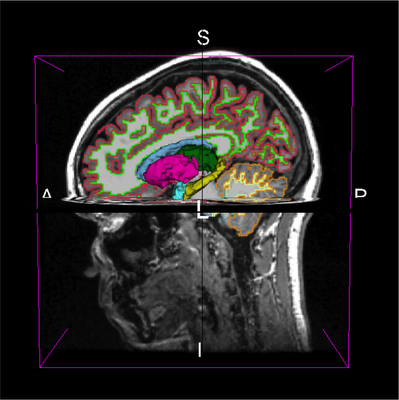

01 · NU School of Medicine · Research project
Kazakh Female Brain Atlas
First female-specific structural MRI brain template for the Kazakh population, built from 55 T1-weighted subjects. Led the pipeline design, probabilistic atlas construction, and cross-template validation. The early results were written up as a preprint and the final version is in the process of being submitted for a journal publication.
Preprint